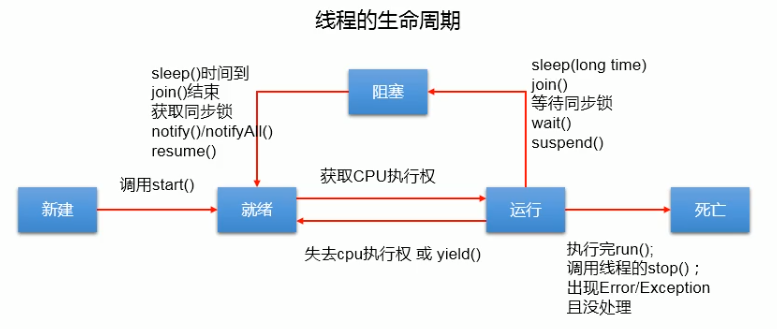

线程的创建和使用 线程的声明周期 线程的同步 线程的通信 sleep()和wait()的异同 Callable接口 线程池
程序、进程、线程
- 程序：是为完成特定任务、用某种语言编写的一组指令的集合。即指一段静态的代码，静态对象。
- 进程：是程序的一次执行过程，或是正在运行的一个程序。是一个动态的过程：有自身的产生、存在和消亡的过程（生命周期）。进程作为资源分配的单位，系统在运行时会为每个进程分配不同的内存区域。
- 线程：进程可进一步细化为线程，是一个程序内部的一条执行路径。一个进程同时并行执行多个线程，就是支持多线程的。线程作为调度和执行的单位，每个线程拥有独立的运行栈和程序计数器（pc），线程切换的开销小。一个进程的多个线程共享相同的内存单元/内存地址空间（它们从同一堆中分配对象，可以访问相同的变量和对象）。这就使得线程间通信更简便高效。但多个线程操作共享的系统资源就可能会带来安全的隐患。
- 栈每个线程独有 方法区和堆每个进程共享
单核多核CPU
- 单核CPU：假的多线程。在同一时间只能跑一个线程
- 多核CPU：几个单核组合起来
- 一个java.exe 至少有三个线程：main()主线程 gc()垃圾回收线程，异常处理线程
并行与并发
- 并行：多个CPU同时执行多个任务，比如多个人同时做不同的事
- 并发：一个CPU同时执行多个任务之间切换（显得同时执行）
多线程程序的优点
- 提高应用程序的响应。对图形化界面更有意义，可增强用户体验
- 提高计算机系统CPU的利用率
- 改善程序结构。将既长又复杂的进程分为多个线程，独立运行，利于理解和修改
何时需要多线程
- 程序需要同时执行两个或多个任务
- 程序需要实现一些需要等待的任务时，如用户输入、文件读写操作、网络操作、搜索等。
- 需要一些后台运行的程序时
线程的创建（2种）和使用
方式一：继承于Thread类
- 创建一个继承于Thread类的子类
- 重写Thread类的run() —> 将此线程执行的操作声明在run()中
- 创建Thread类的子类的对象
- 通过此对象调用start():
- 启动当前线程
- 调用当前线程的run()
1 | public MyThread extends Thread{ |
注意：
- 不能通过直接调用run()的方式来启动线程
- 不可以让已经start()的线程去重新启动，如果想再调用则要重新创建一个线程的对象
Thread类的有关方法
void start(): 启动线程，并执行对象的run()方法
run(): 线程在被调度时执行的操作
String getName(): 返回该线程的名称
void setName(String name): 设置该线程的名称
1
2
3
4
5
6
7
8
9
10public class Demo{
public static void main(String[] args){
MyThread t1 = new MyThread();
t1.setName('t1');//要在start之前设置名字
h1.start();
//给主线程命名
THread.currentThread().setName('主线程');
System.out.println(Thread.currentThread().getName());
}
}
static Thread currentThread(): 返回执行当前代码的线程。在Thread子类中就是This，通常用于主线程和Runnable实现类
static void yield(): 线程让步
- 暂停当前正在执行的线程，把执行机会让给优先级相同或更高的线程
- 若队列中没有同优先级的线程，忽略此方法
join(): 当某个程序执行流中调用其它线程的join()方法时，调用线程将被阻塞，直到join()方法加入的join线程执行完为止
- 低优先级的线程也可以获得执行
static void sleep(long millis): (指定时间：毫秒)
- 令当前活动线程在指定时间段内放弃对CPU控制，使其他线程有机会被执行，时间到后重排队
- 抛出InterruptedException异常
stop(): 强制线程生命期结束，不推荐使用
boolean isAlive(): 返回boolean，判断线程是否还活着
方式二 实现Runnable接口
创建一个实现了Runnable接口的类
实现类去实现Runnable中的抽象方法:run()
创建实现类的对象
将此对象作为参数传递到THread类的构造器中，创建Thread类的对象
通过Thread类的对象调用start()
1
2
3
4
5
6
7
8
9
10
11
12
13
14
15
16public class MyThread implements Runnable{
public void run(){
System.out.println("111");
}
}
public class Test{
public static void main(String[] args){
MyThread myThread = new MyThread();
Thread t1 = new Thread(myThread);
t1.start();
Thread t2 = new Thread(myThread);
t2 .start();
}
}
两次方式的对比
在开发中，优先选择Runnable接口的方式
原因：1. 实现的方式没有类的单继承性的局限性
2. 实现的方式更适合来处理多个线程共享数据的情况（因为本质上只创建了一个对象）
联系：继承的Thread类其实implements了Runnable接口
相同点：两种方式都需要重写run()，将线程要执行的逻辑声明在run()中
线程的调度
- 调度策略
- 时间片：各个线程间来回切换
- 抢占式：高优先级的线程抢占cpu
- Java的调度方法
- 同优先级线程组成先进先出队列（先到先服务），使用时间片策略
- 对高优先级，使用优先调度的抢占式策略
- 线程的优先级
- MAX_PRIORITY: 10
- MIN_PRIORITY: 1
- NORM_PRIORITY: 5 （默认）
涉及的方法
getPriority(): 返回线程优先值
setPriority(int newPriority): 改变线程的优先级
1
2
3
4
5
6
7
8
9
10public class Demo{
public static void main(String[] args){
MyThread t1 = new MyThread();
Thread.currentThread().setPriority(Thread.MIN_PRIORITY);//该主线程的优先级
h1.start();
//给主线程命名
THread.currentThread().setName('主线程');
System.out.println(Thread.currentThread().getName());
}
}
说明
- 线程创建时继承父线程的优先级
- 低优先级只是获得调度的概率低，并非一定是在高优先级线程之后才被调用
线程的生命周期
- JDK中用Thread.State类定义了线程的几种状态，在一个完整的生命周期中通常要经历如下的五种状态：
- 新建：当一个Thread类或其子类的对象被声明并创建时，新生的线程对象处于新建状态
- 就绪：处于新建状态的线程被start()后，将进入线程队列等待CPU时间片，此时它已具备了运行的条件，只是没分配到CPU资源
- 运行：当就绪的线程被调度并获得CPU资源时，便进入运行状态，run()方法定义了线程的操作和功能
- 阻塞：在某种特殊情况下，被认为挂起或执行输入输出操作时，让出CPU并临时终止自己的执行，进入阻塞状态
- 死亡：线程完成了它的全部工作或线程被提前强制性地终止或出现异常导致结束

线程的同步（2+1方式）
在java中，通过同步机制来解决线程的安全问题
方式一：同步代码块
1 | synchronized(同步监视器){ |
处理继承Thread类线程安全问题
1 | class Window2 extends Thread{ |
补充：在继承Thread类创建多线程的方式中，慎用this充当同步监视器，考虑使用当前类当同步监视器
处理实现Runnable接口
1 | class Window1 implements Runnable{ |
补充：在实现Runnable接口创建多线程的方式中，我们可以考虑使用this来充当同步监视器
方式二：同步方法
如果操作共享数据的代码完整的声明在一个方法中，我们不妨碍将此方法声明同步的
处理继承Thread类线程安全问题
1 | class Window3 extends Thread{ |
处理实现Runnable接口
1 | class Window4 implements Runnable{ |
两种方法的总结
- 同步方法仍然涉及到同步监视器只是不需要我们显示的声明。
- 非静态的同步方法，同步监视器是：this
- 静态的同步方法，同步监视器是: 当前类本身
死锁
- 不同的线程分别占用对方需要的同步资源不放弃，都在等待对方放弃自己需要的同步资源，就形成了线程的死锁
- 出现死锁后，不会出现异常，不会出现提示，只是所有的线程都处于阻塞状态，无法继续
解决方法
- 专门的算法、原则
- 尽量减少同步资源的定义
- 尽量避免嵌套同步
方式三：Lock锁 ——JDK5.0新增
- 从JDK5.0开始，java提供了更强大的线程同步机制——通过显式定义同步锁对象来实现同步。同步锁使用Lock对象
- java.util.concurrent.locks.Lock接口是控制多个线程对共享资源进行访问的工具。锁提供了对共享资源的独占访问，每次只能有一个线程对Lock对象加锁，线程开始访问共享资源之前应先获得Lock对象
- ReentranLock类实现了Lock，它拥有与synchronized相同的并发性和内存语义，在实现线程安全的控制中，比较常用的是ReentranLock，可以显式加锁、释放锁
- 如果用继承Thread类，记得lock对象加static
1 | class Window5 implements Runnable{ |
Lock和synchronized的异同：
- Lock是显式锁（手动开启lock()和手动关闭锁unlock()），synchronized是隐式锁，出了作用域自动释放锁
- Lock只有代码块锁，synchronized有代码锁和方法锁
- 使用Lock锁，JVM将花费较少的时间来调度线程，性能更好。并且具有更好的扩展性（提供更多的子类）
使用的优先顺序
Lock —> 同步代码块(已经进入方法体,分配了相对应资源) —> 同步方法（在方法体之外）
线程的通信
- 涉及到的三个方法
- wait(): 一旦执行此方法，当前线程就会进入阻塞状态，并释放同步监视器
- notify(): 一旦执行方法，就会唤醒被 wait 的第一个线程，如果有多个线程被 wait，就唤醒优先级最高的那个
- notifyAll(): 一旦执行此方法，就会唤醒所有被 wait()的线程
注意点：
- wait()，notify().notifyAll()：三个方法必须用在同步代码块或同步方法中。（lock也不可以用这三个）
- wait()，notify()，notifyAll(): 三个方法的调用者必须是同步代码块同步方法的同步监视器。否则会出现IllegalMonitorStateException异常
- wait()，notify()，notifyAll()：三个方法时定义在java.lang.Object类中，不在Thread里。
释放锁：
- 会释放锁的操作：
- 当前线程的同步方法、同步代码执行结束。
- 当前线程在同步代码块、同步方法中遇到 break、return 终止该代码块、该方法的继承执行。
- 当前线程在同步代码块、同步方法中出现未处理的 Error 或 Exception，导致异常结束
- 当前线程在同步代码块、同步方法中执行了线程对象的 wait()方法，当前线程暂停，并释放锁
- 不会释放锁的操作：
- 线程执行同步代码块或同步方法时，程序调用Thread.sleep()、Thread.yield(); 方法只是暂停当前线程的执行
- 线程执行同步代码块时，其他线程调用了线程的 supend()方法将线程挂起，该线程不会释放锁（同步监视器）
- 会释放锁的操作：
例子：使用两个线程打印 1-100。线程 1, 线程 2 交替打印
1 | class Number implements Runnable{ |
sleep()和wait()的异同
- 相同点：一旦执行方法，都可以使得当前的线程进入阻塞状态
- 不同点：
- 两个方法声明的位置不同：Thread类中声明sleep()，Object类中声明wait()
- 调用的要求不同：sleep()可以在任何需要的场景下调用。wait()必须使用在同步代码块或同步方法中
- 如果两个方法都使用在同步代码块或同步方法中,sleep()不会释放锁，wait()会
JDK5.0 新增线程创建方式（2种）
新增方式一：实现Callable接口
- 与Runnable相比，Callable功能更强大些
- call()相比run()方法，可以有返回值
- 方法可以抛出异常，被外面的操作捕获，获取异常信息
- 支持泛型的返回值
- 需要借助FutureTask类，比如获取返回结果
- Future接口
- 可以对具体Runnable、Callable任务的执行结果进行取消、查询是否完成、获取结果等
- FutureTask是Future接口的唯一的实现类
- FutureTask同时实现了Runnable，Future接口。它既可以作为Runnable被线程执行，又可以作为Future得到Callable的返回值
- 步骤
- 创建一个实现Callable的实现类
- 实现call方法，将此线程需要执行的操作声明在call()中
- 创建Callable接口实现类的对象
- 将此Callable接口实现类的对象传递到FutureTask构造器中，创建FutureTask的对象
- 将FutureTask的对象作为参数传递到Thread类的构造器中，创建Thread的对象，并调用start()
- 获取Callable中call方法的返回值
1 | class NumThread implements Callable{ |
新增方式二：使用线程池
- 背景：经常创建和销毁、使用量特别大的资源，比如并发情况下的线程，对性能影响很大
- 思路：提前创建好多个线程，放入线程池中，使用时直接获取，使用完放回池中。可以避免频繁创建销毁、实现重复利用。类似生活中的公共交通工具。
好处：
- 提高响应速度（减少了创建线程的时间）
- 降低资源消耗（重复利用线程池中线程，不需要每次都创建）
- 便于线程管理
- corePoolSize：核心池的大小
- maximumPoolSize：最大线程数
- keepAliveTime：线程没有任务时最多保持多长时间后会终止
- ….
线程池相关API
- JDK5.0起提供了线程池相关API：ExecutorService和Executors
- ExecutorService: 真正的线程池接口。常见子类（实现类）ThreadPoolExecutor
- void execute(Runnable command): 执行任务/命令，没有返回值，一般用来执行Runnable
Future submit(Callable task): 执行任务，有返回值，一般用来执行Callable - void shutdown(): 关闭连接池
- Executors: 工具类、线程池的工厂类，用于创建并返回不同类型的线程池
- Executors.newCachedThreadPool(): 创建一个可根据需要创建新线程的线程池
- Executors.newFixedThreadPool(n): 创建一个可重用固定线程数的线程池（常用）
- Executors.newSingleThreadExecutor(): 创建一个只有一个线程的线程池
- Executors.newScheduledThreadPool(n): 创建一个线程池，它可安排在给定延迟后运行命令或者定期地执行
1 | public class ThreadPool{ |